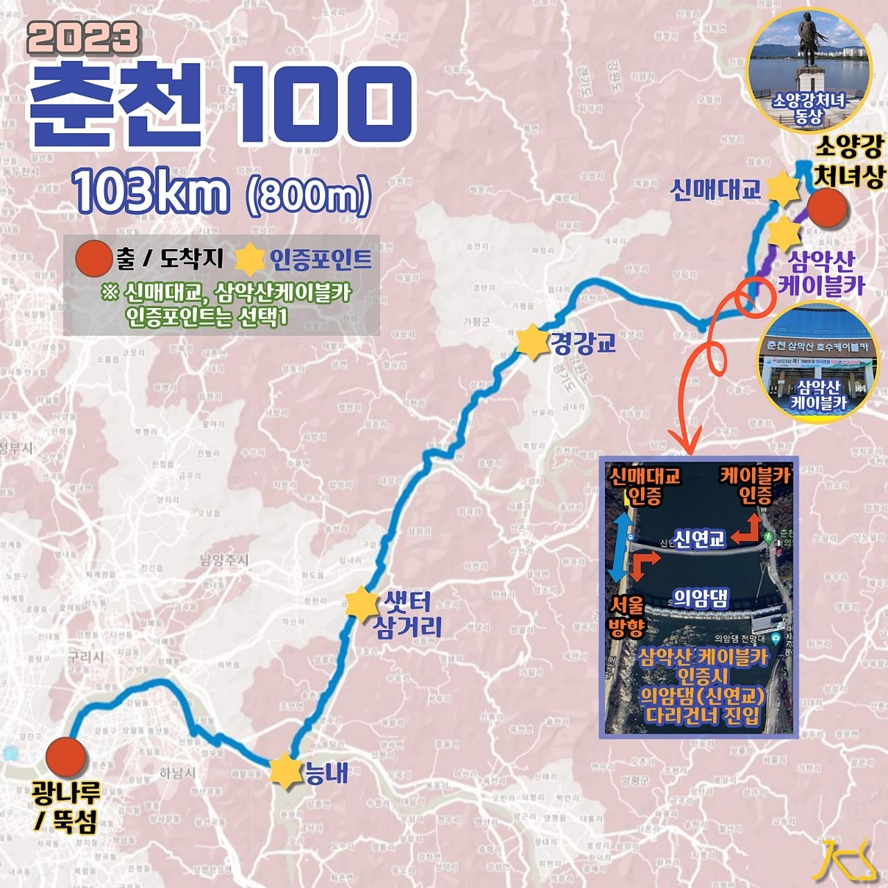

| 코스명 | 춘천 100 |
| 코 스 | 광나루 뚝섬(출발)-능내-샛터삼거리-경교-삼악산케이블카-소녀상처녀상(도착) |
| 거 리 | 102.3km |
| 시 간 | 4시간 04분 |
| GPX 파일 | 춘천100 GPX 다운로드 |

올해 두번째 자출사 라이딩 춘천 100을 가기로 하였다.
아침일찍 광나루 뚝섬에서 부터 출발하여 순조로운 라이딩길에 올랐다. 날씨도 좋고 조금 덥긴 하였지만 친구들과 함께여서 그런지 즐거운 라이딩이었다.
양수리를 지나 양평을 지나는데 예전에 많이 갔던 길이었지만 왠지 낮설기만 하였다. 간간이 전에 갔던 기억이 되살아 나면서 그렇지 이런길이었지 하면서 고향길을 지나듯 옛기억을 되살리며 라이딩하였다.
샛터 삼거리를 지나서 약간의 업힐과 함께 목적지까지 다운힐이 연속되었다. 가는 길에 편의점에 들러서 항상 자전거를 타면 보상으로 먹어주던 비비빅 아이스크림도 먹고 내리막길을 가다보니 자전거길 위로 태양광판넬을 설치하여 무척 시원한 자전거길이 되어 있었다.
경강교를 지나 신매대교 방향으로 돌아가거나 삼악산 케이블카 앞으로 돌아가는 인증코스가 나누어져 우리는 한번도 가보지 않았던 삼악산 케이블카 쪽으로 내달렸다.
초행길이라 그런지 낮설지만 주변경관도 좋고 신매대교 코스 방향보다는 훨씬 아기자기한 코스로 매우 만족스런 코스였다. 삼막사 케이블카 근처에 다다르니 어디선가 아름다운 음악소리가 들려오고 있었으며, 가까이 가보니 우리의 인증 경유지 옆에 작은 음악회가 열려 있어 많은 사람들이 옹기 종기 앉아 음악을 들으면서 즐거운 시간을 보내고 있었다.
삼악산 케이블카에서 인증샷을 남긴 후 우리는 다시 소양강 처녀상으로 내달렸다. 처녀상 앞에 자전거를 세워 마지막 인증을 하고 아 오늘도 무사히 안전라이딩에 서로 감사의 인사를 건넸고 피로도 풀겸 춘천에 오면 늘 가던 역근처 닭갈비집에서 늦은 점심을 먹고 일정을 마무리 하였다.
서울에서 춘천은 자전거를 처음 탈때 100킬로 라이딩의 두려움을 안고 시작한 코스이고 완주후에는 100킬로를 탔다고 뿌듯해 하였던 코스였다. 지금은 몇번 와보니 이제 체력도 늘고 아는 코스라서 별 부담이 없는 코스이지만 항상 갈때마다 설래는 마음은 처음이나 지금이나 똑 같은 것 같다. ^^